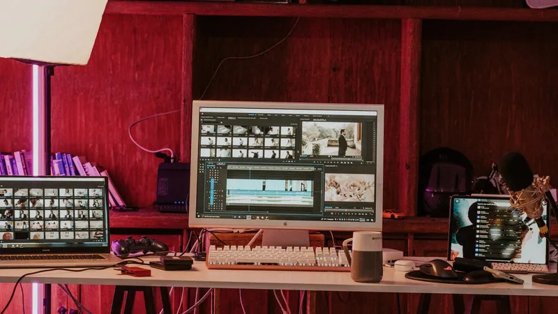
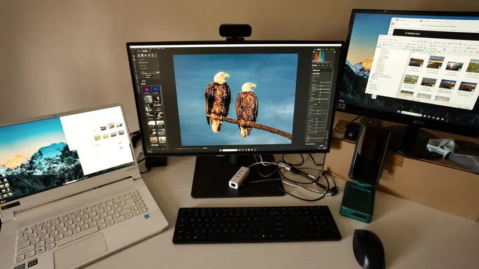
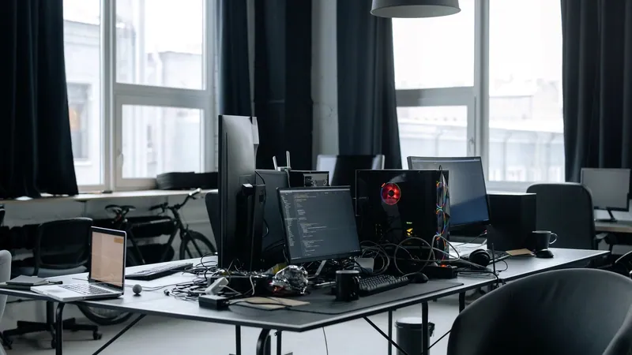

Website Image Optimizer
Resize, compress and convert images for faster websites.
Templates
Start with a proven workflow and save hours of manual work.
Resize, compress and convert images for faster websites.
Prepare PDF documents with real browser-based PDF steps.
Assemble invoice PDFs into a clean send-ready packet.
Trim a clip and convert the shareable moment into a GIF.
Resize, crop and compress images for social posts.
Watermark a PDF and lock it before delivery.

Trim, compress and export a shareable video.
Turn scans into a numbered protected PDF packet.
Watermark, number and protect proposal PDFs.
Create consistent thumbnails for website UI.
Merge class PDFs, number them and protect the handout.
Crop photos to one shape, then compress them for sharing.
Resize images, then bind them into one downloadable PDF.
Watermark a PDF, then protect it before sharing.
Combine PDFs in order, then number the finished report.
Grab a frame from a video, then resize it for use as a thumbnail.
Crop a portrait into a clean circular profile image.
Prepare product photos with consistent size and weight.
Create lightweight WebP images for blog articles.
Adjust brightness, sharpen and export a smaller photo.

Create smaller thumbnails from larger source images.
Merge client PDFs, number the packet and protect it.
Rotate, reorder and protect a PDF before sharing.
Split a PDF and protect the pages you need.
Repair, number and protect an archive PDF.
Delete unwanted pages and protect the final document.
Make a silent looping preview and GIF version.
Reframe a clip vertically and compress it for social.
Resize, adjust volume and compress a training clip.
Trim a video and extract the audio track.
Resize report images and bind them into one PDF.
Watermark and protect an important PDF document.
Merge documents, add page numbers and protect the archive.
Prepare a PDF for safe sharing.
Merge receipts into a numbered secure archive.
Prepare contracts with numbering and protection.
Turn billing screenshots into a protected PDF packet.
Resize and round app icons for product pages.
Convert documentation images into lighter WebP assets.
Create GIF previews from short product videos.

Convert SVG artwork into compressed PNG assets.
Watermark and protect assignment PDFs before sharing.
Resize and compress images for slides or handouts.
Turn a short lecture clip into a GIF preview.
Merge appendix PDFs, number them and protect the packet.
Perfect for website owners, developers and marketers who need faster loading images.
Workflow Builder
Drag tools onto the canvas, adjust each step, and run a real browser-based chain.
A workflow is a reusable path through several compatible Vootkit tools. The builder uses the same processing functions as the individual tool pages, so if a tool cannot be called by the workflow engine yet, it is not offered as a step.
57 tools can currently be workflow steps. Every chain is checked before it runs, and your files stay in your browser while one step hands its output to the next. That means you can prepare a whole batch without repeatedly downloading a file, opening another page, and choosing the same file again.
The current workflow engine focuses on file-processing tools with callable browser engines. These include image tools such as Image Resizer, Image Compressor, Image Converter, Crop Image, JPG to WebP and PNG to WebP. The website image optimizer template uses that exact family of tools so the canvas is not a fake demo: resize, compress and convert all stay editable after the template loads.
PDF workflows can combine real PDF tools including Merge PDFs, Compress PDF, Split PDF, Rotate PDF, PDF Watermark, Protect PDF, Extract PDF Pages, Add Page Numbers, Images to PDF, PNG to PDF and WebP to PDF. If a requested document conversion is not workflow-ready yet, it is kept out of the builder instead of being shown and failing later.
Video workflows use the same in-browser media engine as the individual pages, with steps such as Video Trimmer, Video Compressor, Video to GIF, Video Resizer, Mute Video, Extract Audio, Video Converter and Frame Grabber. The first video run may load the video engine, then processing happens locally in the browser.
The template marketplace is there for people who know the result they want but do not want to design a chain from zero. A template clones a real definition into the builder, preserves its starting settings, and leaves every node editable. You can open Website Image Optimizer, inspect the resize/compress/convert chain, adjust the compression level, add another image step, remove a step, save the workflow locally, then run it on your own files.
The preview panel shows what the template is meant to do before you use it: accepted inputs, output format, privacy status and a simple before/after visual. It does not run anything by itself and it does not imply the stock-photo subjects or image sources are Vootkit customers. The photographs are local template artwork, while the workflow itself still depends on the real tool definitions available in the registry.
Before a workflow runs, Vootkit checks the chain from input to output. A PDF step cannot receive an image unless a compatible conversion step appears before it. A video step cannot receive a PDF. If the chain is incompatible, the builder marks the step and, where possible, suggests a real bridge tool. During a run, each node reports its own status. If one step fails, the run stops at that step, keeps the last successful output when possible, and tells you what happened in the tool's own words.
No. Every workflow-compatible step runs in your browser on your own machine, including the handover between steps.
A workflow is one file selection and one run through a reusable chain, instead of opening several pages manually.
57 tools today - the runnable PDF, image, audio and video sets.